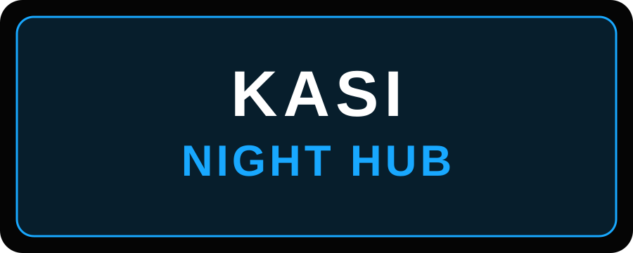

Music
Discover Amapiano releases, DJ sets and the sounds connected to the KASI NIGHT HUB brand.
THE SOUND • THE STYLE • THE CULTURE
Music, events and streetwear inspired by Kasi culture and the energy of Amapiano.

WHAT WE DO
Discover Amapiano releases, DJ sets and the sounds connected to the KASI NIGHT HUB brand.
Follow upcoming entertainment events and make enquiries for DJ and event bookings.
Shop clothing inspired by township culture, modern fashion and the KASI NIGHT HUB identity.
Follow the brand, check the latest releases and get in touch with us.
Contact Us